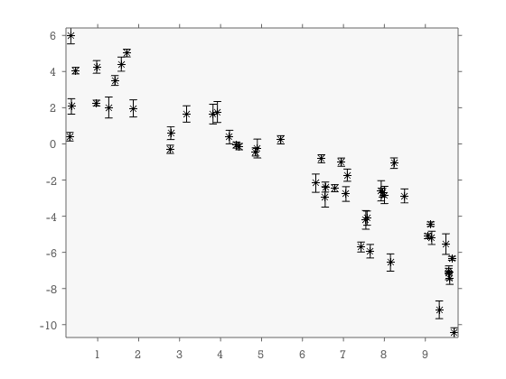
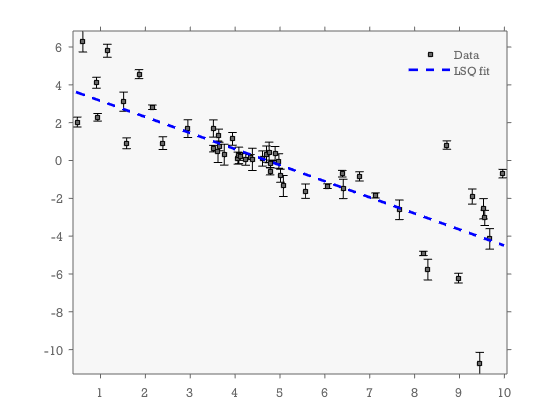
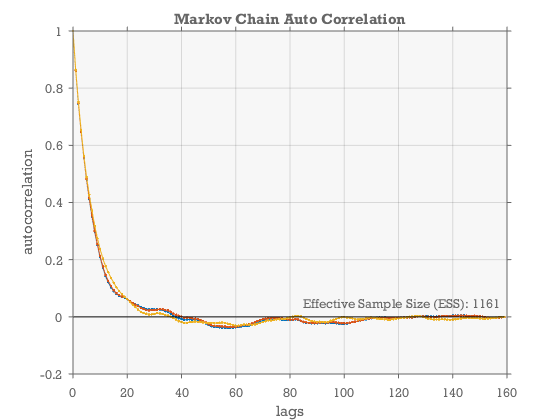
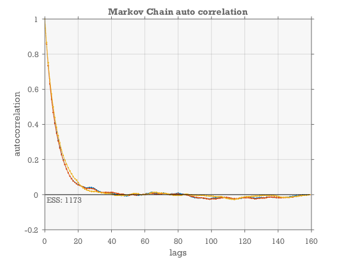

Fitting a line
This demo follows the linefit example of EMCEE for python. See full description here: http://dan.iel.fm/emcee/current/user/line/
Contents
Generate synthetic data
First we generate some noisy data which falls on a line. We know the true parameters of the line and the parameters of the noise added to the observations.
In this surrogate data there are two sources of uncertainty. One source with known variance (yerr), and another multiplicative uncertainty with unknown variance.
% This is the true model parameters used to generate the noise m_true = [-0.9594;4.294;log(0.534)] N = 50; x = sort(10*rand(1,N)); yerr = 0.1+0.5*rand(1,N); y = m_true(1)*x+m_true(2); y = y + abs(exp(m_true(3))*y) .* randn(1,N); y = y + yerr .* randn(1,N); close all %close all figures errorbar(x,y,yerr,'ks','markerfacecolor',[1 1 1]*.4,'markersize',4); axis tight
m_true =
-0.9594
4.294
-0.62736
 Least squares fit
lscov can be used to fit a straight line to the data assuming that the errors in yerr are correct. Notice how this results in very optimistic uncertainties on the slope and intercept. This is because this method only accounts for the known source of error.
[m_lsq,sigma_mlsq,MSE]=lscov([x;ones(size(x))]',y',diag(yerr.^2)); sigma_m_lsq=sigma_mlsq/sqrt(MSE); %see help on lscov m_lsq sigma_m_lsq hold on plot(x,polyval(m_lsq,x),'b--','linewidth',2) legend('Data','LSQ fit')
m_lsq =
-1.0692
4.4279
sigma_m_lsq =
0.011028
0.076933
 Likelihood
We define a likelihood function consistent with how the data was generated, and then we use fminsearch to find the max-likelihood fit of the model to the data.
% First we define a helper function equivalent to calling log(normpdf(x,mu,sigma)) % but has higher precision because it avoids truncation errors associated with calling % log(exp(xxx)). lognormpdf=@(x,mu,sigma)-0.5*((x-mu)./sigma).^2 -log(sqrt(2*pi).*sigma); forwardmodel=@(m)m(1)*x + m(2); variancemodel=@(m) yerr.^2 + (forwardmodel(m)*exp(m(3))).^2; logLike=@(m)sum(lognormpdf(y,forwardmodel(m),sqrt(variancemodel(m)))); m_maxlike=fminsearch(@(m)-logLike(m),[polyfit(x,y,1) 0]');
Prior information
Here we formulate our prior knowledge about the model parameters. Here we use flat priors within a hard limits for each of the 3 model parameters. GWMCMC allows you to specify these kinds of priors as logical expressions.
logprior =@(m) (m(1)>-5)&&(m(1)<0.5) && (m(2)>0)&&(m(2)<10) && (m(3)>-10)&&(m(3)<1) ;
Find the posterior distribution using GWMCMC
Now we apply the MCMC hammer to draw samples from the posterior.
% first we initialize the ensemble of walkers in a small gaussian ball % around the max-likelihood estimate. minit=bsxfun(@plus,m_maxlike,randn(3,100)*0.01);
Apply the hammer:
Draw samples from the posterior
tic
m=gwmcmc(minit,{logprior logLike},100000,'ThinChain',5,'burnin',.2);
toc
Elapsed time is 6.605606 seconds.
Auto-correlation function
figure [C,lags,ESS]=eacorr(m); plot(lags,C,'.-',lags([1 end]),[0 0],'k'); grid on xlabel('lags') ylabel('autocorrelation'); text(lags(end),0,sprintf('Effective Sample Size (ESS): %.0f_ ',ceil(mean(ESS))),'verticalalignment','bottom','horizontalalignment','right') title('Markov Chain Auto Correlation')
Corner plot of parameters
figure ecornerplot(m,'ks',true,'color',[.6 .35 .3])
Plot of posterior fit
figure m=m(:,:)'; %flatten the chain %plot 100 samples... for kk=1:100 r=ceil(rand*size(m,1)); h=plot(x,forwardmodel(m(r,:)),'color',[.6 .35 .3].^.3); hold on end h(2)=errorbar(x,y,yerr,'ks','markerfacecolor',[1 1 1]*.4,'markersize',4); h(4)=plot(x,forwardmodel(m_lsq),'b--','linewidth',2); h(3)=plot(x,forwardmodel(median(m)),'color',[.6 .35 .3],'linewidth',3); h(5)=plot(x,forwardmodel(m_true),'r','linewidth',2); axis tight legend(h,'Samples from posterior','Data','GWMCMC median','LSQ fit','Truth')